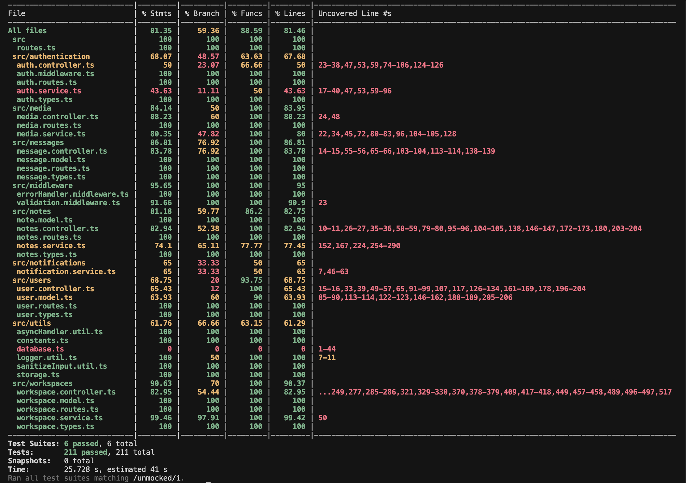
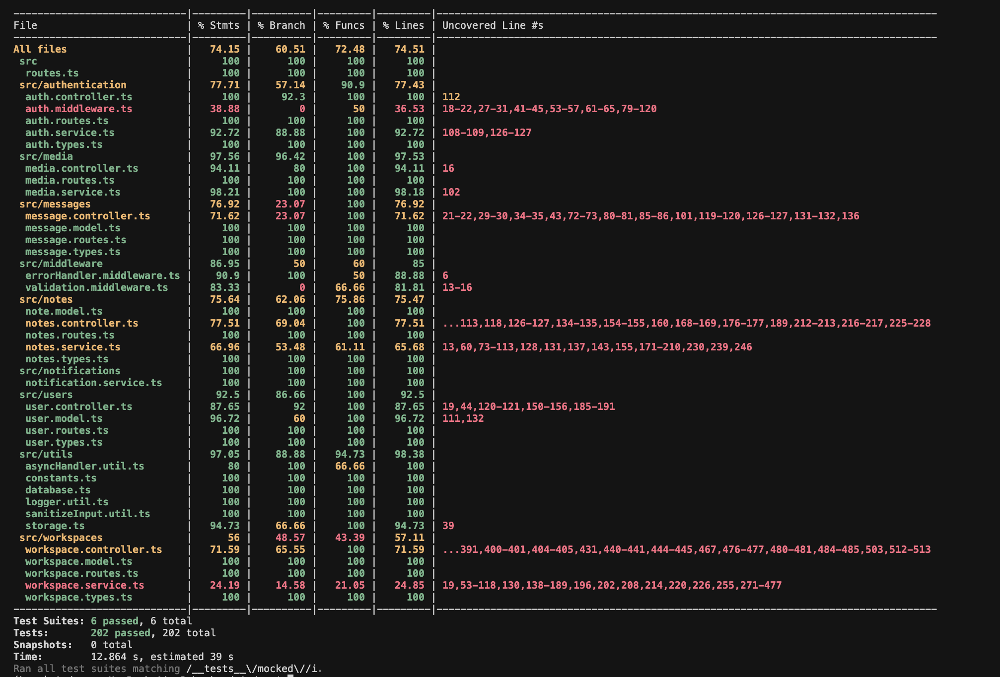
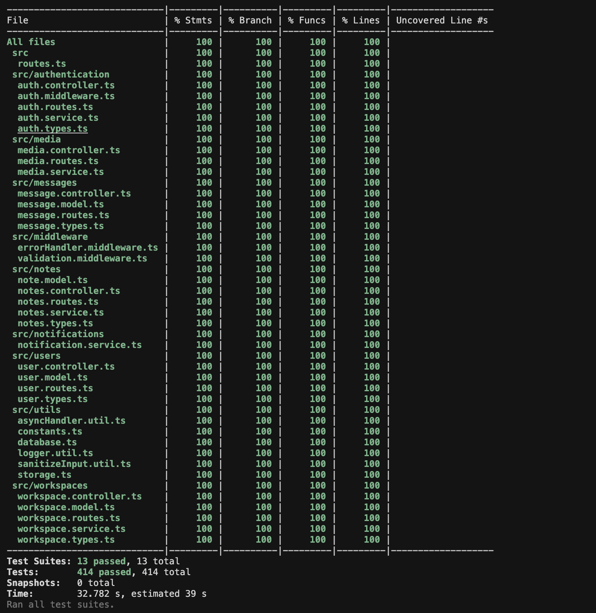

| Change Date | Modified Sections | Rationale |
|---|---|---|
| 29.11.2025 | 2.1.1 | Updated backend test chart with correct line numbers after refactor, listed specific mocked components |
| 27.11.2025 | 4.1 | More detailed setup instructions |
| 27.11.2025 | 3.2, 4.* | Moved the frontend nonfunctional from frontend to nonfunctional |
| 28.11.2025 | 4.2 | Updated the specification of TestNotes after making changes to template functionality |
| Interface | Describe Group Location, No Mocks | Describe Group Location, With Mocks | Mocked Components |
|---|---|---|---|
POST /api/notes |
backend/src/__tests__/unmocked/notes.normal.test.ts#L46 |
backend/src/__tests__/mocked/notes.mocked.test.ts#L66 |
Notes, OpenAI |
PUT /api/notes/:id |
#L288 |
#L219 |
Notes, OpenAI |
DELETE /api/notes/:id |
#L406 |
#L315 |
Notes |
GET /api/notes/:id |
#L470 |
#L270 |
Notes |
GET /api/notes |
#L537 |
#L360 |
Notes, Workspaces, OpenAI |
GET /api/notes/:id/workspaces |
#L910 |
#L643 |
Notes |
POST /api/notes/:id/share |
#L671 |
#L688 |
Notes, Workspaces |
POST /api/notes/:id/copy |
#L793 |
#L787 |
Notes |
| Interface | Describe Group Location, No Mocks | Describe Group Location, With Mocks | Mocked Components |
|---|---|---|---|
POST /api/workspace |
backend/src/__tests__/unmocked/workspace.normal.test.ts#L44 |
backend/src/__tests__/mocked/workspace.mocked.test.ts#L51 |
Workspaces |
GET /api/workspace/personal |
#L166 |
#L94 |
Workspaces |
GET /api/workspace/user |
#L281 |
#L147 |
Workspaces |
GET /api/workspace/:id |
#L343 |
#L181 |
Workspaces |
GET /api/workspace/:id/members |
#L401 |
#L215 |
Workspaces, Firebase Cloud Messaging |
GET /api/workspace/:id/tags |
#L445 |
#L265 |
Workspaces |
GET /api/workspace/:id/membership/:userId |
#L527 |
#L299 |
Workspaces |
POST /api/workspace/:id/members |
#L610 |
#L333 |
Workspaces, Firebase Cloud Messaging |
POST /api/workspace/:id/leave |
#L838 |
#L570 |
Workspaces |
PUT /api/workspace/:id |
#L950 |
#L588 |
Workspaces |
PUT /api/workspace/:id/picture |
#L1042 |
#L624 |
Workspaces, Media |
DELETE /api/workspace/:id/members/:userId |
#L1147 |
#L660 |
Workspaces |
DELETE /api/workspace/:id |
#L1314 |
#L694 |
Workspaces, Firebase Cloud Messaging |
GET /api/workspace/:id/poll |
#L1420 |
#L728 |
Workspaces |
| Interface | Describe Group Location, No Mocks | Describe Group Location, With Mocks | Mocked Components |
|---|---|---|---|
POST /api/auth/signup |
backend/src/__tests__/unmocked/auth.normal.test.ts#L57 |
backend/src/__tests__/mocked/auth.mocked.test.ts#L57 |
Users, Workspaces, Google Auth |
POST /api/auth/signin |
#L105 |
#L453 |
Users, Google Auth |
POST /api/auth/dev-login |
#L122 |
#L655 |
Users, Database |
| Interface | Describe Group Location, No Mocks | Describe Group Location, With Mocks | Mocked Components |
|---|---|---|---|
GET /api/user/profile |
backend/src/__tests__/unmocked/user.normal.test.ts#L44 |
backend/src/__tests__/mocked/user.mocked.test.ts |
— |
PUT /api/user/profile |
#L76 |
#L52 |
Users, Workspaces |
DELETE /api/user/profile |
#L279 |
#L125 |
Workspaces |
POST /api/user/fcm-token |
#L494 |
#L176 |
Users |
GET /api/user/:id |
#L630 |
#L247 |
Users |
GET /api/user/email/:email |
#L700 |
#L349 |
Users |
| Interface | Describe Group Location, No Mocks | Describe Group Location, With Mocks | Mocked Components |
|---|---|---|---|
GET /api/messages/workspace/:workspaceId |
backend/src/__tests__/unmocked/message.normal.test.ts#L40 |
backend/src/__tests__/mocked/message.mocked.test.ts#L48 |
Messages |
POST /api/messages/workspace/:workspaceId |
#L181 |
#L72 |
Messages, Workspaces |
DELETE /api/messages/:messageId |
#L268 |
#L115 |
Messages |
| Interface | Describe Group Location, No Mocks | Describe Group Location, With Mocks | Mocked Components |
|---|---|---|---|
POST /api/media/upload |
backend/src/__tests__/unmocked/media.normal.test.ts#L78 |
backend/src/__tests__/mocked/media.mocked.test.ts#L54 |
Media |
c5f46d61177b82ff74c9c30dfd32a5e24de5d683
cd backendnpm installnpm test~/.github/workflows/backend-tests.yml



| Non-Functional Requirement | Location in Git |
|---|---|
| Backend – Search Speed | ThingSpace.ts/backend/src/__tests__/notes.latency.test.ts |
| Frontend – Two-Click Navigation | frontend/app/src/androidTest/java/com/cpen321/usermanagement/TestReachWithTwoClicks.kt |
notes.latency.test.ts)cd backend && npm test -- __tests__/non-func-testsTestReachWithTwoClicks.kt)cd frontend && ./gradlew connectedAndroidTest -Pandroid.testInstrumentationRunner Arguments.class=com.cpen321.usermanagement.TestReachWithTwoClicks
TestReachWith2Clicks.kt)This test verifies that from a workspace main screen, users can reach:
All screens must be reachable in 2 clicks or fewer.
The test counts the number of clicks for each navigation path.

./frontend/app/src/androidTest/java/com.cpen321.usermanagement
To run the frontend tests, one needs to have a working backend (deployed in the cloud or locally - .env setup in the backend test instructions).
On top of that it is necessary to update the frontend/local.properties file:
sdk.dir= ...sdk folder location on your computer
API_BASE_URL= "...url_to_backend/api"
IMAGE_BASE_URL="...path to a port on the emulator localhost"
GOOGLE_CLIENT_ID="...google client id"
Google client Id can be obtained by setting up a project in the Aoogle OAuth console and creating a web application. The client ID of the web application has to be posted into local.properties. On top of that, one needs to register the frontend app inside the Google OAuth Console. To do that one needs to obtain the development SHA-1 key of the application, generated by the gradle signingReport task. With the key obtained, one can enter the package name: com.cpen321.usermanagement, and the key into the Android client creation menu. While it is vital to create the android client, its Google client id should not be pasted into local.properties, only the backend Google client id.
To set up the content inside the app one can either sign in on their Android Emulator with Thing4G and Friedrich van Aukstin dummy users, which have the right notes and workspaces pre-created, or create two accounts and fill in their bios. In the latter case, one will need to pre-create notes and workspaces as per requirements of a specific test (the per test requirements are listed in comments at the beginning of each test file). One would also need to modify the test file's constants to reflect account names and gmails of the accounts used.
TestCollaborate.kt)Prerequisite:
| Scenario Steps | Test Case Steps |
|---|---|
| Create Workspace | |
| 1. The user opens the “Create Workspace” screen. | Open the “Create Workspace” screen. |
| 2. The app shows input fields and a disabled button. | Verify “Pick a workspace name” and disabled “Create Workspace” button. |
| 3a. User enters workspace title already taken. | Pre-create workspace “Test”. Enter “Test” and click Create. |
| 3a1. App shows error. | Check for dialog: “Failed to create workspace.” |
| 3. User enters valid title. | Enter “Studies”. Verify “Create” button enabled. |
| 4. User clicks “Create”. | Click “Create”. Verify workspace setup screen shown and “Studies” appears in list. |
| Update Workspace | |
| 10. Manager navigates to “Edit Workspace”. | <After workspace creation, one is already at the edit workspace screen> |
| 11. Edit title and bio. | Change title to “Studies v2” and bio “Study group”; click Save; expect “Profile updated successfully.” |
| Invite to Workspace | |
| 12. Member selects “Invite User”. | Open Studies v2 → Manage Workspace → Invite icon. |
| 13. App shows input and button. | Verify email field + “Invite to Workspace” button visible. |
| 14a. Enter invalid email. | Enter “invalidemail”, click Invite. |
| 14a1. Error message shown. | Check: “Could not retrieve profile matching the given email!” |
| 15. Enter valid email. | Input teammate email → click Invite → expect “The user got added to the workspace.” |
| 15b. Invite already-member user. | Enter existing member email and click Invite. |
| 15b1. Error message. | “The user is already a member!” |
| Send Chat Message | |
| 16. User opens workspace chat. | Open chat icon; verify chat screen shown. |
| 17a. Empty message. | Send blank message; verify no change. |
| 17. Valid message. | Send “Hello team!”; verify appears with picture & timestamp. |
| Update Workspace as Non-Manager | |
| 18a. Non-manager tries editing workspace. | Log out as the manager. Open edit screen as non-manager → fields should be greyed out. |
| Leave Workspace (Non-Manager) | |
| 19. Non-manager clicks Leave. | Open Studies v2 → Leave Workspace. |
| 19. App removes user. | Studies v2 no longer appears in workspace list. |
| Ban Users | |
| 20. Manager opens Members screen. | Log in as manager → Workspaces Screen → <select "Studies v2"> → Manage Workspace → Members icon. |
| 21. Manager bans user. | Click trash next to user. |
| 22. User banned permanently. | User removed, cannot be re-invited → “That user is banned” message should show upon an invite attempt |
| Delete Workspace | |
| 23. Manager deletes workspace. | Click Delete Workspace (trash icon). |
| 24. Workspace deleted. | Studies v2 disappears and an appropriate success meassage is shown. |

TestNotes.kt)Prerequisite:
Two pre-existing workspaces.
| Scenario Steps | Test Case Steps |
|---|---|
| Create Note | |
| 1. Open "Create Note" screen. | Tap pencil icon in workspace screen. |
| 2. App shows metadata fields and create button. | Verify "Create Note" button present. |
| 3a. Create note with no title. | Click "Create Note" button. Don't input title. Click "Create". |
| 3a1. Error. | "Please enter a title" |
| 3. Add title. | Enter "Test Note". |
| 4a. Create note with no fields. | Click "Create" with no fields added. |
| 4a1. Error. | "Please add at least one field" |
| 4b. Create note with empty field label. | Add field (select TEXT type). Add tag "important". Clear field label; click "Create". |
| 4b1. Error. | "All fields must have a label" |
| 4. Add field label and content. | Input field label "Notes". Input content in field. |
| 5. Click Create. | Click "Create". |
| 6. Note created. | Verify note "Test Note" appears in workspace. |
| Update Note | |
| 7. Open note to edit. | Navigate to note → click pencil icon. |
| 8. App shows editable fields. | Verify fields editable. Verify tags can be added/removed (click existing tag). |
| 9. Modify content & tags. | Change field content. Add new tag. Remove existing tag. |
| 10. Click Save. | Click "Save". |
| 11. Note updated. | Verify changes reflected in Note Details screen. |
| Share Note | |
| 12. Select "Share Note". | Open note edit screen → click Share icon. |
| 13. Workspace selection dialog. | Verify "Share Note" + workspace list visible. |
| 14. Select workspace & confirm. | Select workspace → click "Share". |
| 15. Note shared. | "Note shared to workspace successfully". Verify note in target workspace, removed from original. |
| Copy Note | |
| 16. Select "Copy Note". | Open note edit screen → click Copy icon. |
| 17. Workspace selection. | Verify "Copy Note" + workspace list visible. |
| 18. Select workspace. | Select workspace → click "Copy". |
| 19. Note copied. | Verify note appears in both target and source workspaces. |
| Delete Note | |
| 20. Select "Delete Note". | Navigate to note → click trash icon. |
| 21. Confirmation dialog. | Verify "Delete Note" + "Are you sure… cannot be undone" |
| 22. Confirm. | Click "Delete". |
| 23. Note deleted. | "Note successfully deleted". Verify note removed from workspace. |

TestRetrieveNotes.kt)Prerequisite:
Existing workspace with notes.
| Scenario Steps | Test Case Steps |
|---|---|
| Search Notes | |
| 1. Open workspace. | Navigate to workspace. |
| 2. Search bar visible. | Verify presence. |
| 3a. Empty query. | Search blank. |
| 3a1. All notes shown. | Verify list. |
| 3. Enter query. | Input string → Search. |
| 4. Matching notes shown. | Relevant notes at top. |
| Filter Notes by Tags | |
| 5. Click filter icon. | |
| 6. Tag selection screen. | Verify “All” + checkboxes. |
| 7. Select “All”. | All tags selected. |
| 9. Deselect “All”. | All tags cleared. |
| 11. Select specific tags. | |
| 12. Go back. | |
| 13. Filter applied. | Only matching notes. Ordered according to the search query |

96e4c5520f47503662f56029212714c229f3617f